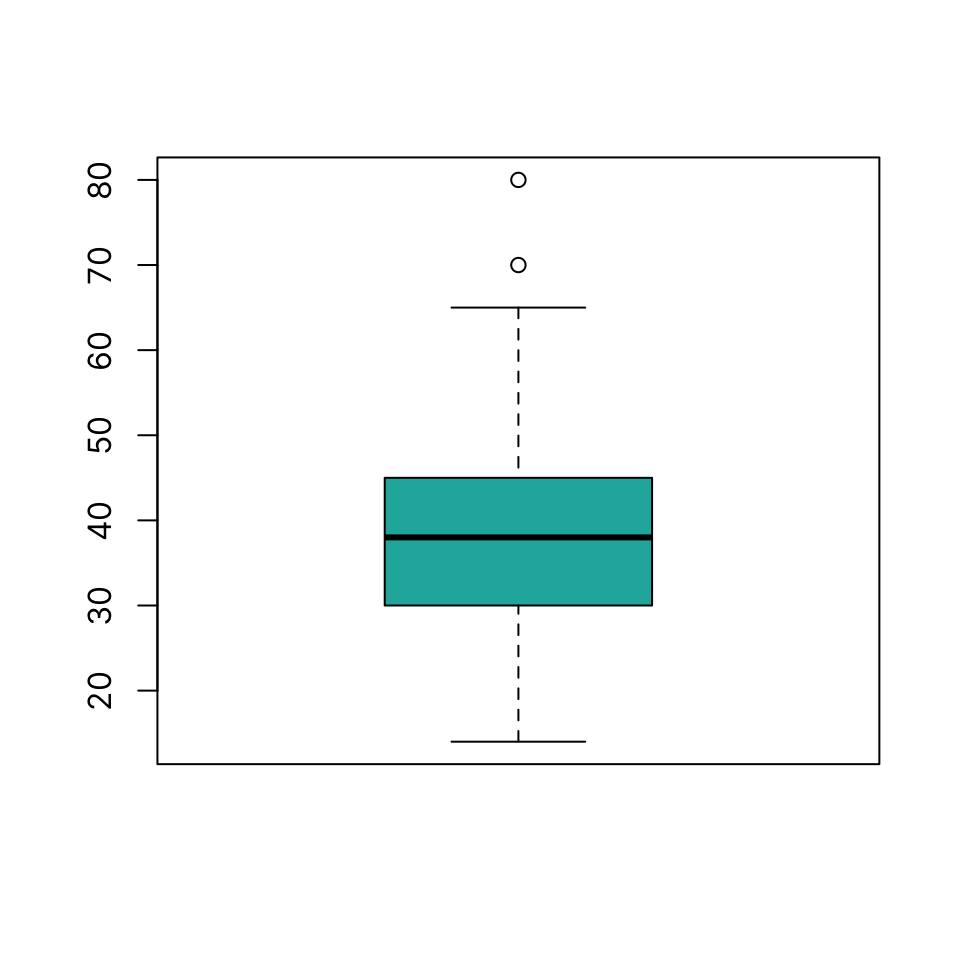

dat <- read.csv("~/icloud/Data/UCI/heart_failure_clinical_records_dataset.csv")Crash Course
This is the online material for the UCSF DCR ‘Intro to R’ selective.
Introduction & Format
This is a brief introduction to the R programming language for health data science. It covers basic commands to allow you to read in data, perform common manipulations, plot data and run common tests.
R is a programming language developed specifically for statistical computing and graphics.
It is often mis-characterized as a “statistical package”, similar to SPSS, for example, but as a full programming language it has far more extensive functionality.
For a more thorough coverage of the topic, see the main part of this book.
Links to book chapters will be provided throughout these notes for those interested in reading up further into particular topics.
R can be used to perform most, if not all, operations in statistics, data science, machine learning. This is not a crash course in statistics, data science, or machine learning, but an introduction to the language itself.
If you have any questions, write them down and make sure to ask them during each section’s Q&A.
Introduction to Programming
Everyone can code
Everyone can learn how to program. Whether it takes you a minute or a longer to learn how to write the code neessary to perform a certain task, you can master it. Do not compare yourself to others.
As with most things: a) motivation is key and b) you get good with practice.
You are here because, presumably, you have important questions to answer using data.
Knowing how to code even a little can give you the power to work with your own data without depending fully on someone else. At the same time, it makes collaborating with other scientists, clinicians, statisticians, etc. much more effective & efficient.
You don’t learn to code by reading books or slides, you learn to code by doing. Ideally, work on data you are interested in, trying to asnwer questions you care about.
Learning to code can be exciting and frustrating. It’s similar to learning to play an instrument - like the guitar. At first, it may seem unnatural and annoying, but you can get better at it rather quickly and it’s very rewarding and satisfying.
It is important to be able to read and write code.
Coding requires logic & creativity
Programming is based on logic and learning to code helps structure your thoughts, your experiments, your reasoning.
Programming languages are human constructs. They were built to answer important needs. They develop with time, as needs evolve. Many design choices are explained historically, a few may be more arbitrary.
Everything is a series of simple, manageable steps
Remember this: the shortest and simplest piece of code up to the longest and most complex is made of a sequence of relatively simple steps.
Always be clear about what you want to achieve first, then break it down step-by-step in code. Each step is relatively easy to figure out and check that it is working as desired. A common mistake is to write multiple steps in one go, and then have a hard time figuring out where an error occurs or why.
To get from A to B using code there are virtually always multiple different paths. That can be confusing or perhaps frustrating, but it is also exciting. Programming to the uninitiated may seem a a rigid exercise but it is highly creative. Remember that there objective and subjective differences to consider when designing a code to take you from A to B. Suppose you have two approaches that have the same input and produce the same output. An objective difference would be how fast each completes the task and how many lines of code or number of function calls it requires. A subjective difference would be the programming style / syntax used / whether the code is “elegant” - a pretty broad topic.
Errors happen often but they are not all the same
Errors in code happen all the time, it is part of the process. But, not all errors are the same.
There are errors that:
- stop execution of code and produce an error message. This is the best case scenario because it can’t go unnoticed and you are forced to address them.
- do not stop execution of code but produce a warning. These warnings are very often ignored. They may be serious or trivial, but must be investigated.
-
do not stop execution and produce no warnings. This is the worst kind of error since it is silent. These can be common and the only way to recognize them is to check the output.
Always read all error & warning messages.
Details matter (a lot)
A lot of mistakes occur, especially in the beginning, because a variable or function name is misspelled.
Always check yourself
Remember: the most important thing is to ensure you produce correct results at each step. Don’t place writing smart or elegant code above writing correct code. Spend time reviewing your code. If possible, have one or more other people review your code.
Document everything
Make a habit from the very beginning to always use comments in your code to explai what you are trying to achieve and why. You will often need to revisit your code after some time has passed. Life will be very hard if it’s not clear what is happening and why.
Programming is largely a team sport. A lot of code is written collaboratively or is used by people other than the author. Again, comprehensive documentation is super important.
Help is at your fingertips
Whether you are just starting out or you are a seasoned programmer, you have many sources of information to help you troubleshoot or learn new skills.
- Use the built-in documentation! Builtin help files, written by the code author, are almost always the best place to start. Their quality will vary, but they are often sufficient to learn how to use a function properly.
- Programming is largely an online activity. All documentation and source code (for open source projects) is available online. Most errors or difficulties you encounter have been encountered many times before by others. A very large number of Q&A sites, blogs, forums are a web search away. Copy-pasting an error message into a search engine will often result in multiple hits.
The R language
The S statistical programming language was developed in 1976 at Bell Labs by John Chambers and others “to turn ideas into software, quickly and faithfully”.
R is an open source implementation of S developed by Ross Ihaka and Robert Gentleman at the University of Auckland, New Zealand; initial version released in 1995.
Supported by the R Foundation for Statistical Computing, developed by the R Core Team and the contributions of many others.
Official part of the Free Software Foundation’s GNU project available under GNU GPL v2.
Latest version 4.2.2 released 2022-10-31 (as of writing) The next version, 4.2.3 will be released Sunday 2023-03-05.
Free Open Source Software
Free Open Source Software (FOSS) is software that is “free” and “open source” - what does that really mean?
“Free software is software that gives you, the user, the freedom to share, study and modify it. We call this free software because the user is free.”
“Open source software is software with source code that anyone can inspect, modify, and enhance.”
Why is FOSS important?
There are many advantage to FOSS, in general. Some of those, that are highly relevant in biomedical research and clinical applications include the promotion of inclusion, transparency, and trustworthiness.
RStudio Integrated Development Environment
RStudio offers a popular, feature-full Integrated Development Environment (IDE) for R.
More advanced users can use Visual Studio Code with the R Extension for a similar R IDE experience together with all the extra functionality and convenience of VS Code.
The R core language & package ecosystem
R boasts extensive quantitative and statistical functionality in the base system.
This functionality is extended through a vast ecosystem of external packages.
- CRAN: The Comprehensive R Archive Network (https://cran.r-project.org/): 19001 packages
- Bioconductor: Bioinformatics-related packages and more (https://www.bioconductor.org/): 2083+ packages
- GitHub: The largest source code host (>200M repositories; https://github.com/): Likely hosts most of the above and quite a few more. Also hosts a copy of the entire CRAN.
Reading in Data
We shall use a heart failure dataset as an example. It is freely available at the UCI repository: “https://archive.ics.uci.edu/ml/machine-learning-databases/00519/heart_failure_clinical_records_dataset.csv”
CSV
The head() function prints the first few lines of an object:
head(dat) age anaemia creatinine_phosphokinase diabetes ejection_fraction
1 75 0 582 0 20
2 55 0 7861 0 38
3 65 0 146 0 20
4 50 1 111 0 20
5 65 1 160 1 20
6 90 1 47 0 40
high_blood_pressure platelets serum_creatinine serum_sodium sex smoking time
1 1 265000 1.9 130 1 0 4
2 0 263358 1.1 136 1 0 6
3 0 162000 1.3 129 1 1 7
4 0 210000 1.9 137 1 0 7
5 0 327000 2.7 116 0 0 8
6 1 204000 2.1 132 1 1 8
DEATH_EVENT
1 1
2 1
3 1
4 1
5 1
6 1The read.csv() function read the contents of the CSV file into an R object known as a data.frame. This is essentially a table like a spreadsheet, where each row represents a case (e.g. a subject, patient, etc.) and each columnn represents a variable (e.g. Patient ID, Age, Sex, Dx, etc.)
XLSX
dat_too <- openxlsx::read.xlsx("~/icloud/Data/UCI/heart_failure_clinical_records_dataset.xlsx")
head(dat_too) age anaemia creatinine_phosphokinase diabetes ejection_fraction
1 75 0 582 0 20
2 55 0 7861 0 38
3 65 0 146 0 20
4 50 1 111 0 20
5 65 1 160 1 20
6 90 1 47 0 40
high_blood_pressure platelets serum_creatinine serum_sodium sex smoking time
1 1 265000 1.9 130 1 0 4
2 0 263358 1.1 136 1 0 6
3 0 162000 1.3 129 1 1 7
4 0 210000 1.9 137 1 0 7
5 0 327000 2.7 116 0 0 8
6 1 204000 2.1 132 1 1 8
DEATH_EVENT
1 1
2 1
3 1
4 1
5 1
6 1Inspect & summarize data
Get data dimensions:
dim(dat)[1] 299 13Look at the data structure, including data types:
str(dat)'data.frame': 299 obs. of 13 variables:
$ age : num 75 55 65 50 65 90 75 60 65 80 ...
$ anaemia : int 0 0 0 1 1 1 1 1 0 1 ...
$ creatinine_phosphokinase: int 582 7861 146 111 160 47 246 315 157 123 ...
$ diabetes : int 0 0 0 0 1 0 0 1 0 0 ...
$ ejection_fraction : int 20 38 20 20 20 40 15 60 65 35 ...
$ high_blood_pressure : int 1 0 0 0 0 1 0 0 0 1 ...
$ platelets : num 265000 263358 162000 210000 327000 ...
$ serum_creatinine : num 1.9 1.1 1.3 1.9 2.7 2.1 1.2 1.1 1.5 9.4 ...
$ serum_sodium : int 130 136 129 137 116 132 137 131 138 133 ...
$ sex : int 1 1 1 1 0 1 1 1 0 1 ...
$ smoking : int 0 0 1 0 0 1 0 1 0 1 ...
$ time : int 4 6 7 7 8 8 10 10 10 10 ...
$ DEATH_EVENT : int 1 1 1 1 1 1 1 1 1 1 ...Get summary of dataset:
summary(dat) age anaemia creatinine_phosphokinase diabetes
Min. :40.00 Min. :0.0000 Min. : 23.0 Min. :0.0000
1st Qu.:51.00 1st Qu.:0.0000 1st Qu.: 116.5 1st Qu.:0.0000
Median :60.00 Median :0.0000 Median : 250.0 Median :0.0000
Mean :60.83 Mean :0.4314 Mean : 581.8 Mean :0.4181
3rd Qu.:70.00 3rd Qu.:1.0000 3rd Qu.: 582.0 3rd Qu.:1.0000
Max. :95.00 Max. :1.0000 Max. :7861.0 Max. :1.0000
ejection_fraction high_blood_pressure platelets serum_creatinine
Min. :14.00 Min. :0.0000 Min. : 25100 Min. :0.500
1st Qu.:30.00 1st Qu.:0.0000 1st Qu.:212500 1st Qu.:0.900
Median :38.00 Median :0.0000 Median :262000 Median :1.100
Mean :38.08 Mean :0.3512 Mean :263358 Mean :1.394
3rd Qu.:45.00 3rd Qu.:1.0000 3rd Qu.:303500 3rd Qu.:1.400
Max. :80.00 Max. :1.0000 Max. :850000 Max. :9.400
serum_sodium sex smoking time
Min. :113.0 Min. :0.0000 Min. :0.0000 Min. : 4.0
1st Qu.:134.0 1st Qu.:0.0000 1st Qu.:0.0000 1st Qu.: 73.0
Median :137.0 Median :1.0000 Median :0.0000 Median :115.0
Mean :136.6 Mean :0.6488 Mean :0.3211 Mean :130.3
3rd Qu.:140.0 3rd Qu.:1.0000 3rd Qu.:1.0000 3rd Qu.:203.0
Max. :148.0 Max. :1.0000 Max. :1.0000 Max. :285.0
DEATH_EVENT
Min. :0.0000
1st Qu.:0.0000
Median :0.0000
Mean :0.3211
3rd Qu.:1.0000
Max. :1.0000 Data types
A vector in R is a collection of items of the same type (e.g. numbers or characters) of any length, including 1 (i.e. there is no distinction between a scalar and a vector).
Data types in R are essentially different types of vectors.
R includes a number of builtin data types. Some of the most common are:
- numeric (e.g. 1.2, 5.9, 11.4)
- character (e.g. “SF”, “SD”)
- logical (e.g. “TRUE”, “FALSE”)
To create a new vector you can use the assignment operator <- or =.
a <- 4You can print the contents of an object just by typing its name in the console:
a[1] 4is the same as:
print(a)[1] 4A comment beging with #. Anything placed after this will not be executed. Use comments to document every step in your code.
Use c() to combine multiple values:
b <- c(3, 5, 7)
b[1] 3 5 7To create a character vector, use single or double quotes around each element:
dept <- c("ED", "Neuro", "Peds")
dept[1] "ED" "Neuro" "Peds" Data Structures
R includes multiple different data structures. Think of a data structure as a container that holds one or more vectors of data.
The data.frame is one of the most common data structures for statistics, because it can hold vectors of different kinds, e.g. numeric, categorical, and character.
Factors
Factors in R are used to store categorical variables and therefore have many important uses in statistics / data science / machine learning.
Let’s convert binary categorical variables in our dataset to factors:
Working with data.frames
One way to select a column of a data.frame by name, is to use the $ notation. Note, we use head() to avoid printing the entire variable.
head(dat$age)[1] 75 55 65 50 65 90Functions in R
R includes a very large number of functions in the base language, which allow you to do a whole lot of data cleaning & manipulation, plotting, and modeling.
A function is called by typing its name, followed by a parenthesis with or without arguments.
For example, to get the mean of the b vector from above:
mean(b)[1] 5Summarize data
A lot of statistical functionality is built in to the language. You can easily get summary statistics of variables using functions like mean(), median(), range(), max(), min().
Continuous variables
Categorical variables
The table() function gives you the counts for each level/unique value of a variable:
Plots
R has powerful and extensive support for graphics built in to the core language.
Here, we look at how to produce some common and important plot types:
Histogram
Draw a histogram using hist(x)
hist(dat$age, col = "lightseagreen")Boxplot
Draw a boxplot using boxplot(x)
boxplot(dat$ejection_fraction, col = "lightseagreen")
You can use a simple formula notation to draw boxplots grouped by a categorical variable using ~ symbol:continuous variable ~ grouping variable
boxplot(dat$serum_sodium ~ dat$smoking, col = "lightseagreen")
Scatter plot
Draw a scatter plot using plot(x, y)
plot(dat$age, dat$serum_sodium, col = "lightseagreen")
plot(dat$age, dat$serum_sodium, col = "lightseagreen")Hypothesis Testing
T-test
Are the means of two groups significantly different? We use a simple formula notation as with the boxplot above to split values by group:
t.test(dat$serum_sodium ~ dat$sex)
Welch Two Sample t-test
data: dat$serum_sodium by dat$sex
t = 0.45176, df = 184.61, p-value = 0.652
alternative hypothesis: true difference in means between group 0 and group 1 is not equal to 0
95 percent confidence interval:
-0.8565791 1.3653665
sample estimates:
mean in group 0 mean in group 1
136.7905 136.5361 Chi-squared test
Test for association between two categorical variables:
chisq.test(dat$smoking, dat$DEATH_EVENT)
Pearson's Chi-squared test with Yates' continuity correction
data: dat$smoking and dat$DEATH_EVENT
X-squared = 0.0073315, df = 1, p-value = 0.9318
smoking_sex <- chisq.test(dat$smoking, dat$sex)
smoking_sex
Pearson's Chi-squared test with Yates' continuity correction
data: dat$smoking and dat$sex
X-squared = 57.463, df = 1, p-value = 3.444e-14You can print the observed frequencies:
smoking_sex$observed dat$sex
dat$smoking 0 1
0 101 102
1 4 92and the expected frequencies:
smoking_sex$expected dat$sex
dat$smoking 0 1
0 71.28763 131.71237
1 33.71237 62.28763Saving data
CSV
You can write R objects to CSV file using `write.csv()’. These can be read directly into any program or language that can handle data.
write.csv(dat, "~/Data/dat.csv")RDS
You can also directly save any R object as an “RDS” file. These can be read into R. The advantage is that they are compressed and therefore may take a lot less space, and will maintain any type conversion you have performed.
saveRDS(dat, "~/Data/dat.rds")Builtin Documentation
After you’ve successfully installed R and RStudio, one of the first things to know is how to access and search the builtin documentation.
Get help on a specific item
If you know the name of what you’re looking for (an R function most commonly, but possibly also the name of a dataset, or a package itself), just type ? followed by the name of said function, dataset, etc. in the R prompt:
?sampleIn RStudio, the above example will bring up the documentation for the sample function in the dedicated “Help” window, commonly situated at the bottom right (but can be moved by the user freely). If you are running R directly at the system shell, the same information is printed directly at the console.
Try running the above example on your system.
Search the docs
If you do not know the name of what you are looking for, you can use double question marks, ??, followed by your query (this is short for the help.search command that provides a number of arguments you can look up using ?help.search):
??bootstrapPDSR - Crash Course PDSR - Crash Course PDSR - Crash Course PDSR